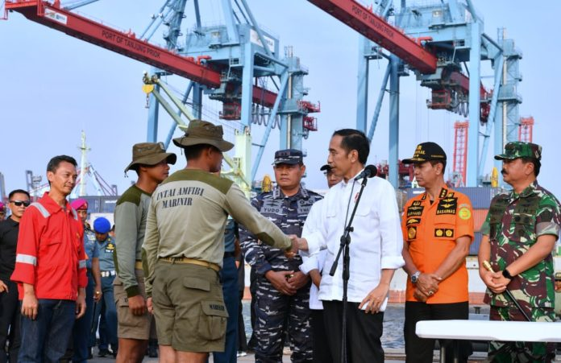
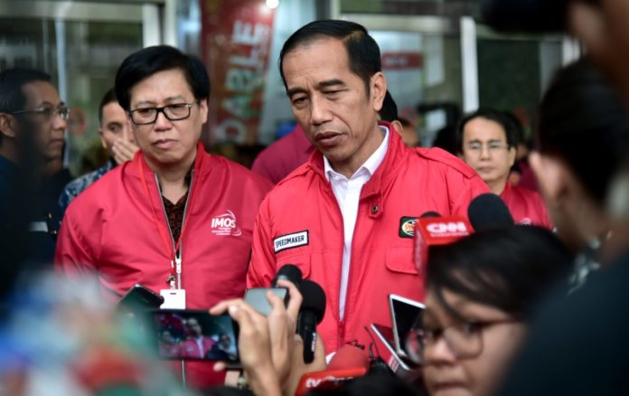
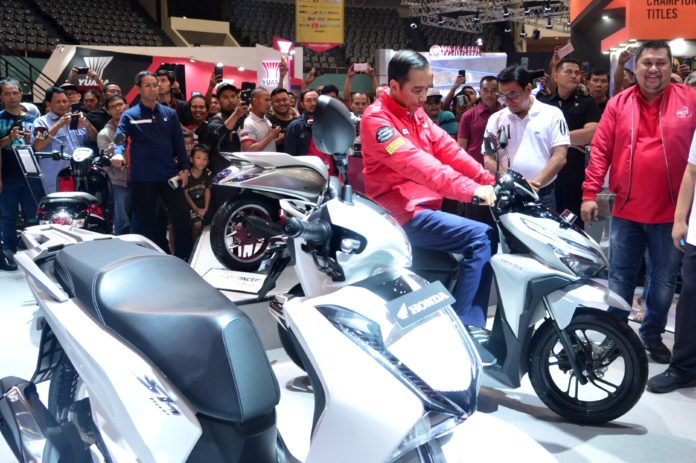
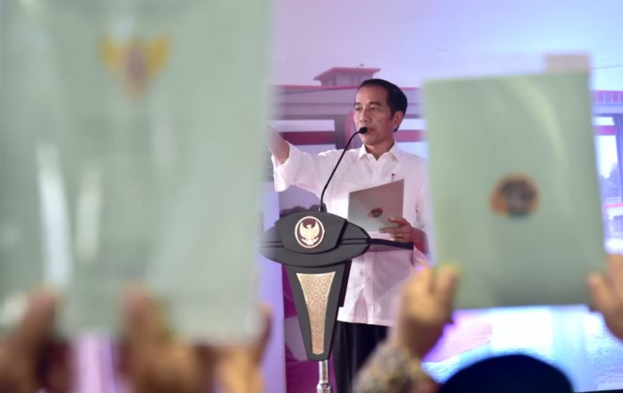
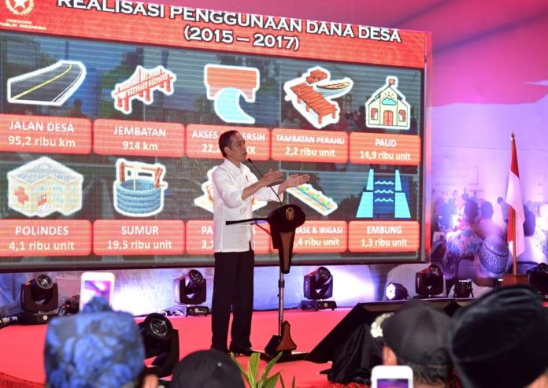
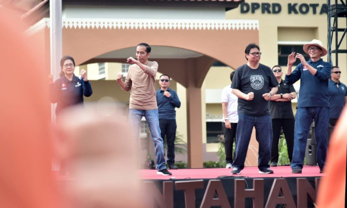

Terkini

Apresiasi Kerja Cepat Tim Pencarian Korban Lion Air JT-610–Presiden Joko Widodo kembali mendatangi posko terpadu evakuasi Lion Air JT-610 yang berada di Jakarta International Container Terminal (JICT) 2, Tanjung Priok, Jakarta Utara.
Tiba di lokasi pada pukul 16.00 WIB, Kepala Negara langsung mengadakan rapat koordinasi bersama Menteri Perhubungan Budi Karya Sumadi, Panglima TNI Marsekal Hadi Tjahjanto, Kepala Badan Nasional Pencarian dan Pertolongan (BNPP, sebelumnya bernama Basarnas) Marsekal Madya TNI Muhammad Syaugi, Ketua KNKT Soerjanto Tjahjono, dan sejumlah unsur terkait lainnya. Rapat dilangsungkan di sebuah tenda yang berada di posko terpadu.

Sampaikan Belasungkawa Atas Meninggalnya Penyelam Saat Evakuasi Lion Air–Presiden Joko Widodo menyampaikan rasa belasungkawa atas meninggalnya Syachrul Anto, salah seorang penyelam dalam proses evakuasi pesawat Lion Air PK-LQP nomor penerbangan JT 610 yang jatuh di perairan Tanjung Karawang, Jawa Barat, Senin, 29 Oktober 2018 lalu.
“Saya menyampaikan duka cita yang mendalam atas meninggalnya Pak Syachrul Anto. Semoga almarhum diterima di sisi Allah SWT dan keluarga yang ditinggalkan diberikan ketabahan dan keikhlasan,” kata Presiden di Jakarta Convention Center (JCC), Senayan, Jakarta, Sabtu, 3 November 2018.
Presiden mengapresiasi peran dan kontribusi Syachrul yang sangat besar dalam proses pencarian dan evakuasi, baik korban maupun komponen-komponen pesawat seperti black box dan badan pesawat.
“Ada 859 aparat relawan dari semuanya ikut bersama-sama dalam rangka evakuasi, mencari black box, dan lain-lain yang sudah 5 hari ini kita lakukan, pagi, siang, malam. Kita harapkan tidak ada kejadian lagi penyelam yang meninggal di lapangan,” tandasnya.
Untuk diketahui, Syachrul merupakan penyelam relawan dari Indonesian Diver Rescue Team (IDRT). Pria berusia 48 tahun itu meninggal dunia saat bertugas, pada Jumat, 2 November 2018.

Kunjungi IMOS 2018, Apresiasi Industri Sepeda Motor Indonesia–Presiden Joko Widodo hari ini, Sabtu, 3 November 2018, mengunjungi pameran Indonesia Motorcycle Show (IMOS) 2018 yang dihelat di Plenarry Hall & Assembly Hall, Jakarta Convention Center. Pameran sepeda motor dua tahunan ini mengusung tema “Indonesia Future Technology”.
Aktual

Bagikan 6.000 Sertifikat Hak Atas Tanah di Tangerang –Presiden Joko Widodo melanjutkan kegiatan kerjanya di Provinsi Banten dengan menyerahkan langsung sertifikat hak atas tanah untuk rakyat. Acara digelar di Lapangan Festival Alam Sutera, Panunggangan Timur, Kota Tangerang, Minggu sore, 4 November 2018. Pada kesempatan kali ini, sebanyak 6.000 sertifikat diserahkan Presiden Joko Widodo kepada warga masyarakat dari 8 kecamatan se-Kota Tangerang. Adapun luas bidang tanah yang disertifikatkan pada tahun 2018 untuk Kota Tangerang adalah 706.029.037 meter persegi.

Dana Desa Wujud Perhatian Pemerintah Kepada Desa – Program dana desa yang telah dijalankan oleh pemerintah selama 4 tahun merupakan bentuk perhatian pemerintah kepada desa. Hingga saat ini tak kurang dari Rp187 triliun telah digelontorkan pemerintah untuk pembangunan desa di seluruh Tanah Air. Demikian disampaikan Presiden Joko Widodo saat memberikan sambutan pada acara Sosialisasi Prioritas Penggunaan Dana Desa 2019 dan Evaluasi Kebijakan Pembangunan dan Pemberdayaan Masyarakat Desa Provinsi Banten. Acara ini dihadiri oleh para kepala desa, pendamping desa, pengurus Badan Usaha Milik Desa (BUMDes), kader posyandu, guru Pendidikan Anak Usia Dini (PAUD), LPM kabupaten, serta anggota Badan Permusyawaratan Desa.

Senam Bersama Masyarakat Tangerang, Serukan Pola Hidup Sehat – “Pola hidup sehat, tidak hanya di Tangerang, tapi di seluruh Tanah Air harus terus kita gelorakan,” kata Presiden seusai senam.
Pola hidup sehat tersebut menurut Presiden adalah mengatur pola makan, mengatur pola tidur, dan berolahraga. Tiga hal itu merupakan faktor penting untuk menjaga kesehatan.
“Jangan sampai kalau sudah sakit, menyembuhkannya sangat sulit. Oleh sebab itu, yang paling penting adalah bagaimana kita bisa menjaga pola hidup sehat. Makan kita, istirahat, dan olahraga kita, semuanya kita atur sebaik-baiknya,” ujarnya.
Sekilas